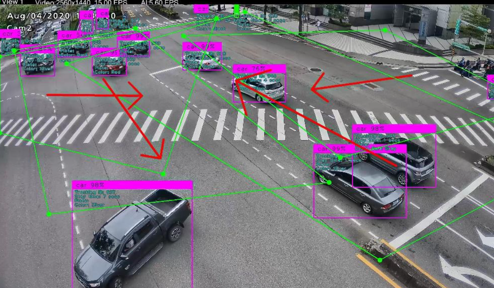
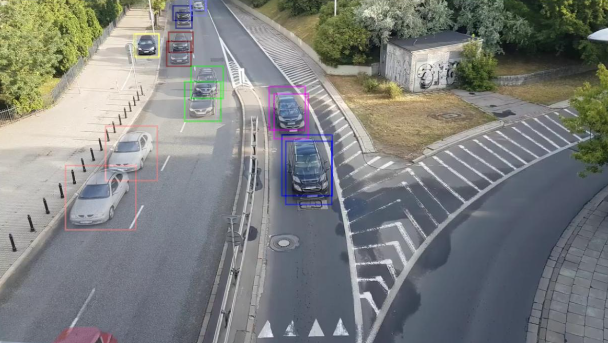
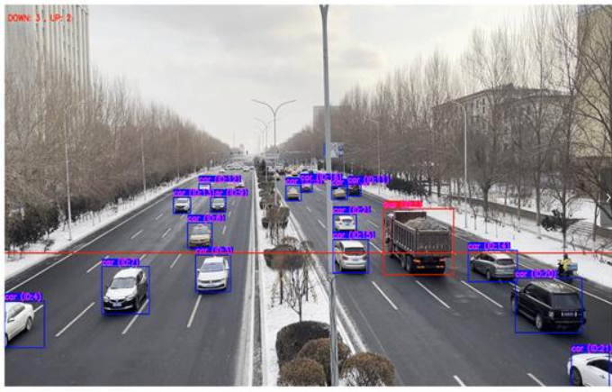
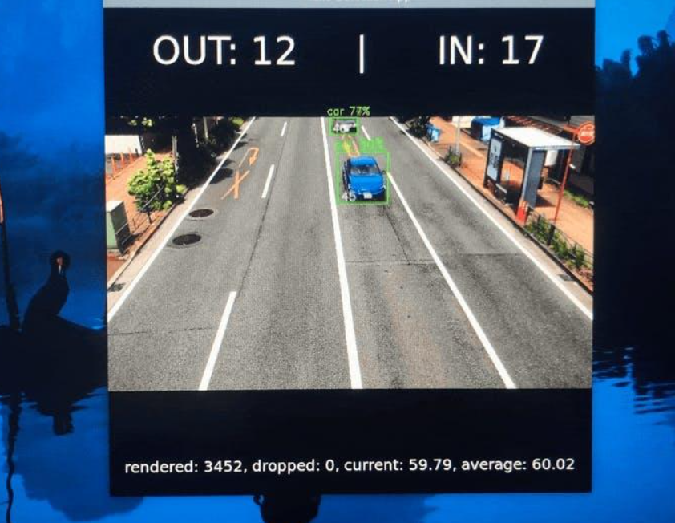

AI Vehicle Detection
Detect vehicles in live road footage using a Hailo-8L AI accelerator.
VJAYA ROBOTICS PROJECT
RASPBERRY PI AI PROJECTBuild an intelligent traffic monitoring system using Raspberry Pi 5, Hailo-8L AI accelerator and Raspberry Pi Camera Module 3. Detect vehicles, track their movement, automatically count traffic and estimate road congestion using real-time artificial intelligence and computer vision.
Explore ProjectPROJECT OVERVIEW
The AI Traffic Monitoring System is a computer vision project that uses a Raspberry Pi 5 and Hailo-8L AI accelerator to monitor vehicles on a road.
The Raspberry Pi Camera Module 3 captures live traffic footage. The Hailo AI accelerator processes the camera frames and detects vehicles such as cars, motorcycles, buses and trucks.
The system tracks detected vehicles, assigns tracking IDs and counts vehicles crossing a predefined counting line. It also estimates traffic density and identifies possible congestion conditions.
A Flask-based web dashboard displays live camera footage, vehicle statistics and traffic congestion information.




WHAT IT CAN DO
Detect vehicles in live road footage using a Hailo-8L AI accelerator.
Identify different vehicle categories, including cars, motorcycles, buses and trucks.
Assign unique tracking IDs to detected vehicles and follow their movement across video frames.
Count vehicles when they cross a predefined virtual counting line.
Analyze the number of vehicles currently visible in the camera frame.
Estimate traffic conditions as Low, Medium, High or Severe based on detected vehicle density.
Monitor live camera footage, vehicle statistics and congestion information through a browser.
Store traffic statistics and vehicle records in an SQLite database.
Use hardware-accelerated AI inference to process camera frames efficiently.
HARDWARE REQUIREMENTS
SOFTWARE REQUIREMENTS
The project uses separate Python modules for camera capture, Hailo AI inference, vehicle classification, tracking, counting, traffic analysis, congestion detection, database storage and dashboard management.
HOW IT WORKS
HARDWARE CONNECTIONS
| Component | Connection | Raspberry Pi Connection |
|---|---|---|
| Camera Module 3 | Camera ribbon connector | CAM/DISP connector |
| Hailo-8L AI Accelerator | PCIe interface | Compatible Raspberry Pi 5 PCIe connection |
| Power Supply | USB-C | Raspberry Pi 5 USB-C power port |
| Cooling Fan | Compatible fan connector | Raspberry Pi cooling connection |
| Network | Ethernet / Wi-Fi | Network interface |
AI VEHICLE RECOGNITION
| Vehicle Class | COCO Class ID | Detection Label |
|---|---|---|
| Car | 2 | car |
| Motorcycle | 3 | motorcycle |
| Bus | 5 | bus |
| Truck | 7 | truck |
These class IDs correspond to the COCO dataset. The selected Hailo model must use compatible class mappings for the classification module to work correctly.
TRAFFIC ANALYSIS
| Traffic Level | Vehicle Count | System Interpretation |
|---|---|---|
| Low | 0 – 4 | Low vehicle density |
| Medium | 5 – 14 | Moderate vehicle density |
| High | 15 – 29 | Heavy vehicle density |
| Severe | 30 or more | Very high vehicle density |
PROGRAM STRUCTURE
Main application and coordination of all project modules.
Central configuration for camera, AI model, tracking and dashboard.
Initializes Camera Module 3 and captures video frames.
Loads the Hailo HEF model and performs AI vehicle detection.
Tracks detected vehicles and assigns unique tracking IDs.
Counts vehicles crossing the virtual counting line.
Classifies cars, motorcycles, buses and trucks.
Analyzes detected vehicles and calculates traffic statistics.
Estimates traffic congestion levels using vehicle density.
Creates and manages the SQLite traffic database.
Provides a live Flask dashboard with video and traffic statistics.
Lists the additional Python package dependencies.
PROGRAMMING
Download the original AI Traffic Monitoring System Python files individually.
main.py
Download Code ↓ 📄config.py
Download Code ↓ 📄camera.py
Download Code ↓ 📄vehicle_detector.py
Download Code ↓ 📄vehicle_tracker.py
Download Code ↓ 📄vehicle_counter.py
Download Code ↓ 📄vehicle_classifier.py
Download Code ↓ 📄traffic_analyzer.py
Download Code ↓ 📄congestion_detector.py
Download Code ↓ 📄database.py
Download Code ↓ 📄dashboard.py
Download Code ↓ 📄requirements.txt
Download Code ↓INSTALLATION GUIDE
TERMINAL COMMANDS
sudo apt update
sudo apt install python3-picamera2
hailortcli fw-control identify
rpicam-hello --timeout 5000
source .venv/bin/activate
python main.py
LIVE MONITORING
The Flask dashboard provides a browser-based interface for monitoring the traffic system. It displays live camera footage, detected vehicle statistics and estimated congestion levels.


PROJECT DEMONSTRATION
AI Traffic Monitoring System Demonstration
Add your actual Raspberry Pi traffic monitoring photograph or demonstration video here.IMPORTANT INFORMATION
FUTURE IMPROVEMENTS
Estimate vehicle speed using calibrated road geometry and tracking over time.
Extend the system to monitor several road locations using multiple cameras.
Develop a traffic signal control prototype using traffic density information.
Send aggregated traffic statistics to a remote server for analysis.